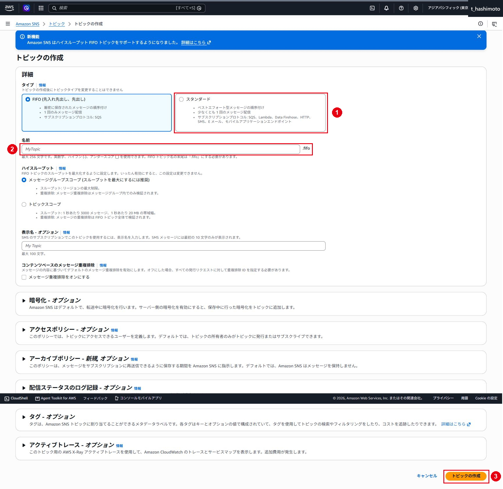
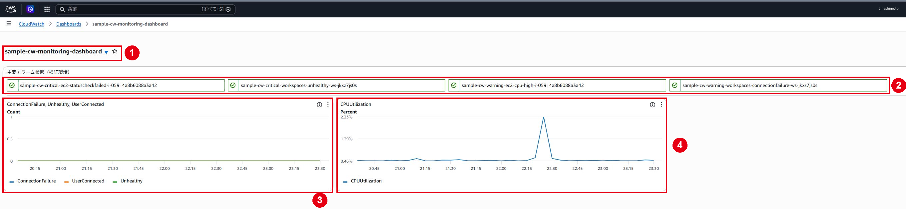
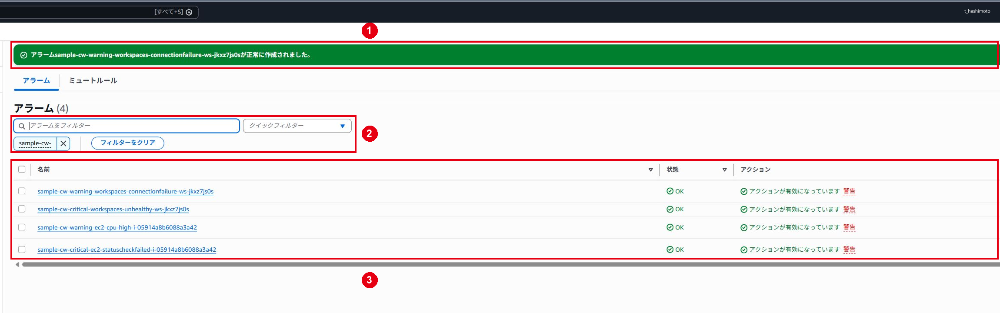

CloudWatch・SNS 監視／通知
[Amazon CloudWatch] EC2・Windows OS監視とアラーム設定手順書
仕様
構成・動作

AWS Architecture Iconsを使用して、本環境の監視・通知経路を図示しています。AWS Architecture Icons
| 監視対象 | 名前空間・メトリクス | 用途 |
|---|---|---|
| EC2 | AWS/EC2：StatusCheckFailed、CPUUtilization |
ステータスチェック失敗・CPU高負荷の検知 |
| Windows OS | CWAgent：LogicalDisk % Free Space、Memory % Committed Bytes In Use |
ドライブ空き容量・メモリコミット率の監視 |
| 通知 | SNS StandardトピックとEmailサブスクリプション | ALARMへの状態変更をメールで通知 |
| 可視化 | CloudWatchダッシュボード | メトリクス推移とアラーム状態の確認 |
管理範囲
CloudWatch agentの設定はSystems ManagerのRun CommandとParameter Storeで管理します。WorkSpacesの監視設定はWorkSpaces監視とアラーム設定手順で実施し、通知先とダッシュボードを共用します。Windowsイベントログの収集は本書の設定に含みません。
制約事項
OKは設定した評価条件を満たした状態です。業務機能の確認は、対象サービス・OS・認証の確認と合わせて実施します。- 欠落データを
notBreachingとして扱うアラームは、メトリクス停止時にも正常扱いとなる可能性があります。データの最新時刻も点検します。 Memory % Committed Bytes In Useはコミット上限に対する使用率です。物理メモリ使用率とは計算対象が異なります。- しきい値は検証環境の初期値です。通常時の負荷と業務要件に合わせて確定します。
構築作業
1. SNSトピックを作成する
- AWSマネジメントコンソールへサインインし、東京リージョンでAmazon SNSを開きます。
- 「トピック」で既存の通知先を確認します。同じ用途のトピックがある場合は、名前・ARN・通知先を照合して使用します。
- 新規作成する場合は「トピックの作成」を選択します。
- タイプを「スタンダード」、名前を
sample-sns-cloudwatch-alertsにします。

- 表示名はメール通知のみの場合は空欄にできます。暗号化・アクセスポリシーは承認済み設計に合わせ、「トピックの作成」を選択します。

- 詳細画面でトピック名・タイプ・ARNを確認します。

ℹ️ 情報：掲載画像の購読状況 トピック作成時の画像ではサブスクリプションが0件です。次の登録・購読確認を実施して通知先を有効にします。
2. Emailサブスクリプションを登録する
- 作成したトピックの「サブスクリプション」タブで「サブスクリプションの作成」を選択します。
- 次の値を設定します。
| 項目 | 設定値・確認内容 |
|---|---|
| トピックARN | sample-sns-cloudwatch-alertsのARN |
| プロトコル | Email |
| エンドポイント | 承認済みの運用通知先メールアドレス |
| サブスクリプションフィルターポリシー | 全アラーム通知を受信する場合は指定なし |
- メールアドレスを再確認し、「サブスクリプションの作成」を選択します。
- 一覧で対象の通知先と、購読確認待ち（
Pending confirmation）の状態を確認します。
3. 確認メールから購読を承認する
- 登録した通知先で、Amazon SNSから届いた購読確認メールを開きます。
- メール本文のトピックARNが今回の通知先トピックと一致することを確認します。
- 「Confirm subscription」を選択します。
- ブラウザーに購読確認完了の画面が表示されることを確認します。
- SNSコンソールを更新し、対象のサブスクリプションが「確認済み」（
Confirmed）となり、サブスクリプションARNが表示されることを確認します。
⚠️ 注意：購読確認が完了するまでメール通知は配信されない 確認待ちの場合は、宛先・迷惑メール・メール受信制限を確認し、SNSコンソールから確認リクエストを再送信します。配布リストを使用する場合は、管理担当者が確認メールを受信できることも確認します。
ℹ️ 情報：購読確認の画像は未取得 保管済み画像はトピック作成までです。登録画面、確認済みの一覧、テストメール受信画面は本作業で取得します。メールアドレスや購読確認用URLの取り扱いは、お客様の記録ルールに従います。
4. SNSのメール配信をテストする
- 通知先へテスト実施を周知します。
- SNSの対象トピックで「メッセージの発行」を選択します。
- 件名へ「CloudWatch監視通知テスト」、本文へ対象環境とテスト実施日時を入力します。
- 「メッセージの発行」を選択します。
- 通知先で件名・本文・受信日時を確認します。
SNS単体のテスト後、アラーム経由の通知を「通知試験と運用確認」で確認します。Amazon SNSのメール通知
5. EC2ステータスチェックアラームを作成する
作成前のアラームを確認する
CloudWatchでアラーム－すべてのアラームを開き、同じインスタンス・メトリクスのアラームがないことを確認してから、アラームの作成を選択します。
StatusCheckFailedを選択する
- メトリクスの選択を選択します。
AWS/EC2－インスタンス別メトリクスを開きます。- インスタンスID
i-05914a8b6088a3a42、メトリクス名StatusCheckFailedの行を選択します。

条件を設定する
| 設定項目 | 設定値 |
|---|---|
| 統計 | 最大値（Maximum） |
| 期間 | 5分 |
| しきい値の種類 | 静的 |
| 条件 | 1以上 |
| アラームを実行するデータポイント | 2/2 |
| 欠落データの処理 | 欠落（missing） |

ℹ️ 情報：停止中のメトリクス
StatusCheckFailedは、インスタンスまたは基盤側のステータスチェックに失敗した場合に1となります。停止済みインスタンスではメトリクスが途切れ、設定によりINSUFFICIENT_DATAとなる場合があります。停止の検知が必要な場合は、EC2の状態変更も監視対象にします。
SNS通知を設定する
- アラーム状態トリガーでアラーム状態を選択します。
- 既存のSNSトピックを選択を選択します。
sample-sns-cloudwatch-alertsを選択します。

名前と説明を設定する
| 項目 | 値 |
|---|---|
| アラーム名 | sample-cw-critical-ec2-statuscheckfailed-i-05914a8b6088a3a42 |

内容を確認して作成する
設定値、対象インスタンス、SNSトピックを確認し、アラームの作成を選択します。

6. CPU使用率アラームを作成する
次の点を除き、前節と同じ流れで作成します。
| 設定項目 | 設定値 |
|---|---|
| メトリクス | AWS/EC2－CPUUtilization |
| ディメンション | InstanceId=i-05914a8b6088a3a42 |
| 統計 | 平均値（Average） |
| 期間 | 5分 |
| 条件 | 80%以上 |
| アラームを実行するデータポイント | 3/3 |
| 欠落データの処理 | 正常（notBreaching） |
| アラーム名 | sample-cw-warning-ec2-cpu-high-i-05914a8b6088a3a42 |


⚠️ 注意：しきい値の確定
80%は検証用の初期値です。導入後の通常値、バースト利用、バッチ処理時間を確認し、継続時間とともに確定します。
7. Windows OSメトリクスを収集する
EC2標準メトリクスだけでは、Windowsのメモリコミット率とドライブ別空き容量は取得できません。CloudWatch agentをインストール・設定してCWAgent名前空間へ送信します。
導入前の画像ではCWAgentメトリクスが未出力です。設定後の出力結果は図18で確認します。

IAM権限を確認する
EC2に関連付けたインスタンスプロファイルへ、少なくとも次のAWS管理ポリシーが付与されていることを確認します。
- Systems Managerで管理する場合：
AmazonSSMManagedInstanceCore - CloudWatch agentでメトリクス・ログを送信する場合：
CloudWatchAgentServerPolicy
本検証では、Sample_EC2RoleにAmazonSSMManagedInstanceCoreは付与済みでしたが、CloudWatchAgentServerPolicyが未付与でした。IAMコンソールでCloudWatchAgentServerPolicyを追加し、許可ポリシー一覧に次の3ポリシーが表示されることを確認しました。
AmazonSSMManagedInstanceCoreCloudWatchAgentServerPolicySample-Policy
IAMロールの許可ポリシー一覧で、CloudWatchAgentServerPolicyが付与されていることを確認します。

⚠️ 注意：CloudWatch agent用IAM権限AmazonSSMManagedInstanceCoreだけでは、CloudWatch Agentによるメトリクス送信に必要な権限を満たしません。Agentを導入する前に、対象EC2のインスタンスロールへCloudWatchAgentServerPolicyが付与されていることを確認します。
CloudWatch agentを導入する
- 既存設定を上書きしないよう、最初にSystems Managerの
AmazonCloudWatch-ManageAgentをAction=statusで実行し、agentの導入・稼働状態を確認します。 - 既にagentを利用している場合は、
C:\ProgramData\Amazon\AmazonCloudWatchAgent配下の設定と、既存のログ収集設定を確認・退避します。新しい設定は既存設定とマージしてから適用します。 - 未導入の場合はAWS Systems ManagerのRun Commandを開き、AWS管理ドキュメント
AWS-ConfigureAWSPackageを選択します。 Action=Install、Name=AmazonCloudWatchAgent、Version=latestを設定し、対象EC2へ実行します。- コマンドの全体的なステータスと詳細なステータスがともに
Success（日本語表示では「成功」）となっていることを確認します。
本検証では、導入前のAction=statusが失敗しました。状態確認コマンドの失敗時は、出力内容・サービスの有無を確認します。その後、AWS-ConfigureAWSPackageを次の値で実行し、インストールが成功しました。
| 項目 | 設定値 |
|---|---|
| Action | Install |
| Installation Type | Uninstall and reinstall |
| Name | AmazonCloudWatchAgent |
| Version | latest |
| 対象 | Sample-mng-001（i-05914a8b6088a3a42） |
| S3出力 | 無効 |
Run Commandの実行結果で、全体的なステータスと詳細なステータスがともに「成功」となっていることを確認します。

収集設定を作成する
設定ウィザードまたはJSON設定で、次のWindows Performance Counterを1分間隔で収集します。
| オブジェクト | カウンター | リソース |
|---|---|---|
LogicalDisk |
% Free Space |
監視対象ドライブ。本例はC: |
Memory |
% Committed Bytes In Use |
なし |
設定例は次のとおりです。環境で必要なドライブだけを対象にし、一時領域やリカバリ領域を除外してください。
{
"metrics": {
"namespace": "CWAgent",
"append_dimensions": {
"InstanceId": "${aws:InstanceId}"
},
"metrics_collected": {
"LogicalDisk": {
"measurement": [
{
"name": "% Free Space",
"rename": "LogicalDisk % Free Space",
"unit": "Percent"
}
],
"metrics_collection_interval": 60,
"resources": ["C:"]
},
"Memory": {
"measurement": [
{
"name": "% Committed Bytes In Use",
"rename": "Memory % Committed Bytes In Use",
"unit": "Percent"
}
],
"metrics_collection_interval": 60
}
}
}
}Parameter Storeへ収集設定を保存する
- Systems ManagerのParameter Storeを開き、パラメータの作成を選択します。
- 名前を
AmazonCloudWatch-sample-windows-basic-v1、階層をStandard、タイプをStringにします。 - 値に前項のJSONを貼り付けて保存します。
本検証では、パラメータAmazonCloudWatch-sample-windows-basic-v1をStandard、Stringで新規作成し、作成成功メッセージと一覧表示を確認しました。
保存したパラメータを開き、名前、利用枠、種類および設定値が指定内容と一致していることを確認します。

ℹ️ 情報：Parameter Store名の接頭辞
CloudWatchAgentServerPolicyが取得できる標準的な接頭辞に合わせ、本例ではAmazonCloudWatch-から始まる名前を使用します。既存の同名パラメータがある場合は上書きせず、内容を確認してバージョン名を変更してください。
設定を適用し、メトリクスを確認する
- Systems ManagerのRun Commandで
AmazonCloudWatch-ManageAgentを選択します。 Action=configure、Mode=ec2、Optional Configuration Source=ssm、Optional Configuration Location=AmazonCloudWatch-sample-windows-basic-v1、Optional Restart=yesを指定し、対象EC2へ実行します。- Run Commandが
Successとなり、AmazonCloudWatch-ManageAgentのAction=statusでAgentがrunningかつconfigstatusがconfiguredとなることを確認します。 - 本設定は1分間隔のため、起動後1～5分を目安にCloudWatchのすべてのメトリクスで
CWAgent名前空間を開きます。 - 対象インスタンスの
LogicalDisk % Free Space（instance=C:）とMemory % Committed Bytes In Useが1分間隔で出力されることを確認します。グラフ化したメトリクスの期間も1分に変更します。 - Windows上のパフォーマンスモニターの値と大きく乖離していないことを確認します。
設定適用コマンドが成功し、コマンドパラメータが指定内容と一致していることを確認します。

状態確認コマンドの出力で、statusがrunning、configstatusがconfiguredとなっていることを確認します。

CloudWatchで対象メトリクスをグラフ化し、ディスク空き容量とメモリ使用率のデータが1分間隔で表示されることを確認します。

本検証では、設定適用後の状態確認で次の結果を確認しました。
| 確認項目 | 確認結果 |
|---|---|
| Agent status | running |
| configstatus | configured |
| Agent version | 1.300072.0b1766 |
| CloudWatch名前空間 | CWAgent |
| 論理ディスクメトリクス | LogicalDisk % Free Space、instance=C: |
| メモリメトリクス | Memory % Committed Bytes In Use |
| ディメンション | InstanceId=i-05914a8b6088a3a42 |
| グラフ表示 | 両メトリクスの最新データを1分期間で表示 |
ログ確認先（agentの設定に応じて確認）：C:\ProgramData\Amazon\AmazonCloudWatchAgent\Logs\amazon-cloudwatch-agent.log
ℹ️ 情報：メトリクスの単位
設定例ではunitをPercentとして明示します。既存設定で単位がNoneの場合は、しきい値20または80が意図どおりの百分率として送信されていることを、グラフとWindows側の値で確認してからアラームを作成します。
8. Windows OSアラームを作成する
前節でCWAgentメトリクスの値・単位・最新データ時刻を確認した後、EC2アラームと同じ流れでメトリクスと条件の指定→SNS通知→名称と説明→レビューと作成を行います。
ℹ️ 情報：Windows OSアラームの設定例 次の2アラームは追加設定用の手順です。既存画像では作成完了を確認していません。
論理ディスク空き容量
| 設定項目 | 初期設計値 |
|---|---|
| 名前空間 | CWAgent |
| メトリクス | LogicalDisk % Free Space |
| 統計 | Average |
| 期間 | 1分 |
| 条件 | 20以下 |
| 評価 | 3/3 |
| 欠損 | notBreaching |
| SNSトピック | sample-sns-cloudwatch-alerts |
| 命名例 | sample-cw-warning-windows-disk-free-low-<instance-id>-c |
メモリコミット率
| 設定項目 | 初期設計値 |
|---|---|
| 名前空間 | CWAgent |
| メトリクス | Memory % Committed Bytes In Use |
| 統計 | Average |
| 期間 | 1分 |
| 条件 | 80以上 |
| 評価 | 3/3 |
| 欠損 | notBreaching |
| SNSトピック | sample-sns-cloudwatch-alerts |
| 命名例 | sample-cw-warning-windows-memory-high-<instance-id> |
メトリクスが出力されない場合は、agentログに加えて、対象EC2からmonitoring.ap-northeast-1.amazonaws.comおよびSystems Manager関連エンドポイントへTCP/443で到達できること、VPCエンドポイントのセキュリティグループとプライベートDNS、プロキシ設定を確認します。
9. ダッシュボードへEC2・Windows OSメトリクスを追加する
- CloudWatchの「ダッシュボード」で
sample-cw-monitoring-dashboardを開きます。未作成の場合は「ダッシュボードの作成」から作成します。 - 「ウィジェットの追加」で折れ線グラフを選択し、対象EC2の
CPUUtilizationとStatusCheckFailedを追加します。 CWAgentから対象EC2のディスク空き容量（instance=C:）とメモリコミット率を追加します。- CPUはAverage、ステータスチェックはMaximum、Windows OSはAverageとし、対象ID・単位・期間が分かるタイトルを設定します。
- 「アラームステータス」のウィジェットへ今回作成したEC2・Windows OSアラームを追加します。
- 保存し、グラフの最新時刻と表示値を確認します。
ℹ️ 情報：検証画像の確認範囲 CloudWatch agentの稼働とWindows OSメトリクスの出力は掲載画像で確認できます。Windows OSのアラーム作成、ダッシュボードへの追加、SNSメール受信の画像は未取得です。
通知試験と運用確認
1. テスト用アラームで通知経路を確認する
- 通知担当者と試験時間・通知先・テスト名を共有します。
- 継続してデータが取得できる検証用EC2のメトリクスを選び、専用のテスト用アラームを作成します。
- 現在値でALARMとなるしきい値を設定し、SNS通知先を指定します。EC2停止・再起動などのアクションは設定しません。
- 必要な評価期間を待ち、「履歴」でALARMへの状態変更とSNS通知アクションの結果を確認します。
- 通知先でアラーム名・対象・状態変更時刻が一致するメールを確認します。
- テスト用アラームを削除し、運用アラームのしきい値・アクションを変更していないことを確認します。
⚠️ 注意：状態を強制変更する試験の確認範囲
cloudwatch set-alarm-stateを使用する場合は、通知専用のテストアラームを対象とします。この方法では通知アクションを確認でき、実際のメトリクスによるしきい値判定は別途確認します。
2. 通知されない場合を切り分ける
| 確認箇所 | 確認内容 |
|---|---|
| アラーム | メトリクスの最新時刻、統計、期間、しきい値、状態変更履歴、アクション有効化 |
| SNS | 指定したトピックARN、確認済みのEmail購読、フィルターポリシー |
| メール | 宛先、迷惑メール、配布リストの受信制限 |
| 権限 | SNSトピックのCloudWatchからのPublish許可。暗号化使用時はKMSキーポリシーも確認 |
❌ エラー：通知アクションが失敗した場合 アラーム履歴のエラー内容を確認し、SNSトピック・暗号化キーの許可設定を見直します。設定修正後は、テスト用アラームで通知を再確認します。
3. 定期点検と変更時の対応
- 月次：アラームのアクション、長期のデータ欠落、SNS購読状態と受信担当者を確認します。
- 四半期：通常値とピーク値、しきい値、不要なアラーム・ウィジェットを見直します。
- 構成変更時：新しいリソースを監視対象へ追加し、通知試験を行います。
- 設定を戻す場合：作業前に退避したagent設定を復元し、既存のログ収集とメトリクス送信を確認します。共有IAMロールのポリシーは利用先への影響を確認してから変更します。
参考資料
[Amazon CloudWatch] WorkSpaces監視とアラーム設定手順書
仕様
構成・動作
AWS/WorkSpacesのメトリクスをCloudWatchで評価し、ALARMへの状態変更時にSNSでメール通知します。通知先トピックとEmail購読はEC2・Windows OS監視とアラーム設定手順のSNS設定で準備します。
管理範囲
基本監視はUnhealthyとConnectionFailureの2アラームです。UserConnectedは接続状況の表示に使用します。CPU・メモリ・ボリューム・接続品質の監視は運用要件に応じた追加候補です。
制約事項
- 接続関連メトリクスはクライアント認証後のセッション接続を対象とします。認証前の失敗は認証基盤側のログなどで確認します。
- AutoStopや未使用時の欠落データは正常扱いとする初期設定です。最新データ時刻とWorkSpacesの状態も確認します。
- メトリクスの提供範囲はプロトコルなどによって異なります。追加時は対象で取得できる系列を確認します。
構築作業
1. Unhealthyアラームを作成する
- CloudWatchでアラーム－すべてのアラーム－アラームの作成を選択します。
- メトリクスの選択から
AWS/WorkSpacesを開きます。 WorkspaceId=ws-jkxz7js0s、メトリクスUnhealthyを選択します。- 次の条件を設定します。
| 設定項目 | 設定値 |
|---|---|
| 統計 | 最大値（Maximum） |
| 期間 | 5分 |
| 条件 | 1以上 |
| アラームを実行するデータポイント | 3/3 |
| 欠落データの処理 | 正常（notBreaching） |
| SNSトピック | sample-sns-cloudwatch-alerts |
| アラーム名 | sample-cw-critical-workspaces-unhealthy-ws-jkxz7js0s |

Unhealthy=1が3期間連続で発生した場合に通知します。瞬間的な状態遷移による誤報を抑えつつ、継続する異常を検知する初期設計です。
- 「次へ」でアクションの設定へ進み、ALARMへの通知先に
sample-sns-cloudwatch-alertsを選択します。 - 名前と説明を入力し、設定内容を確認して「アラームの作成」を選択します。
2. ConnectionFailureアラームを作成する
AWS/WorkSpacesから対象WorkSpaceのConnectionFailureを選択します。- 次の条件を設定します。
| 設定項目 | 設定値 |
|---|---|
| 統計 | 合計（Sum） |
| 期間 | 15分 |
| 条件 | 3以上 |
| アラームを実行するデータポイント | 1/1 |
| 欠落データの処理 | 正常（notBreaching） |
| SNSトピック | sample-sns-cloudwatch-alerts |
| アラーム名 | sample-cw-warning-workspaces-connectionfailure-ws-jkxz7js0s |

- 「次へ」でアクションの設定へ進み、ALARMへの通知先に
sample-sns-cloudwatch-alertsを選択します。 - 説明欄には、監視範囲を明確にするため「クライアント認証後、WorkSpacesセッションの接続開始時に発生した失敗を監視する。事前認証段階のAD認証失敗は含まれない」旨を記載します。
- 設定内容を確認してアラームを作成します。

ℹ️ 情報：接続失敗メトリクスの監視範囲ConnectionFailureは、WorkSpacesクライアントの認証が成功した後、WorkSpaceセッションへの接続が開始されてからの失敗を示します。パスワード誤り、アカウントロック、認証前のActive Directoryエラーをすべて検知するメトリクスではありません。認証関連はDirectory Serviceログ、Windowsイベントログ、認証基盤側の監視と組み合わせます。
3. UserConnectedをダッシュボードへ追加する
UserConnectedは利用状況の可視化に使用し、本手順では固定しきい値アラームを作成しません。
- CloudWatchでダッシュボードを開き、
sample-cw-monitoring-dashboardを選択します。未作成の場合は同名で作成します。 - 折れ線または数値ウィジェットを追加します。
AWS/WorkSpaces－UserConnectedを選択します。- WorkSpace単位では接続時の値が
1、未接続時が0となるため、単体の接続有無はMaximumで表示します。複数台の同時接続数を表示する場合は、各WorkSpaceの0/1系列を同じ期間・時点でメトリクス数式により合算します。期間内のSumだけを人数として扱うと、同じWorkSpaceの複数データポイントを重複計上するため使用しません。 - ダッシュボードを保存し、業務時間帯を含む期間でグラフを確認します。
ℹ️ 情報：未接続時の表示
UserConnected=0は、必ずしも異常ではありません。利用者が接続していない時間帯やAutoStop状態では正常です。固定アラームではなく、利用実態、ライセンス・キャパシティ検討、問い合わせ時の確認に用います。
4. 共通ダッシュボードの表示を確認する
入力値
| 項目 | 例 |
|---|---|
| ダッシュボード名 | sample-cw-monitoring-dashboard |
| 表示期間 | 3時間、1日、1週間を用途に応じて切り替え |
| 自動更新 | 1分または5分 |
手順
- CloudWatchでダッシュボードを開きます。
sample-cw-monitoring-dashboardを開きます。未作成の場合だけダッシュボードの作成で同名のダッシュボードを作成します。- 次のウィジェットを配置します。検証環境では「今回配置済み」の項目まで作成し、画面表示を確認済みです。
| 区分 | ウィジェット | メトリクス | 推奨表示 |
|---|---|---|---|
| 今回配置済み | EC2負荷 | CPUUtilization |
折れ線、Average |
| 今回配置済み | WorkSpaces状態・利用 | Unhealthy、ConnectionFailure、UserConnected |
折れ線 |
| 今回配置済み | アラーム状態 | 本書で作成した4アラーム | アラームステータス |
| 追加予定 | EC2状態 | StatusCheckFailed |
数値または折れ線、Maximum |
| 追加予定 | Windows OS | LogicalDisk % Free Space、Memory % Committed Bytes In Use |
折れ線、Average |
| 追加予定 | WorkSpacesリソース | CPUUsage、MemoryUsage、RootVolumeDiskUsage、UserVolumeDiskUsage |
折れ線、Average |
| 追加予定 | WorkSpaces接続品質 | SessionLaunchTime、InSessionLatency、UDPPacketLossRate、TCPRetransmissionRate |
折れ線、AverageとMaximum |
- リソース名、単位、統計、期間が一目で分かるウィジェットタイトルを設定します。
- ダッシュボードの保存を選択します。

ℹ️ 情報：ダッシュボード画像の確認範囲
ダッシュボード本体、EC2 CPU、WorkSpaces 3指標、作成済みアラームの配置は確認済みです。Windows OSメトリクスの出力は後続の取得画像で確認でき、EC2・Windows OS監視とアラーム設定手順に掲載しています。このダッシュボード画像はWindows OSウィジェット追加前の記録です。表の「追加予定」は、要件に合わせて追加し、表示結果を確認します。
5. アラームと通知を確認する
CloudWatchでアラーム－すべてのアラームを開き、検索欄へsample-cw-を入力します。

検証環境では次の4アラームを作成し、いずれもOK、アクション有効となっていることを確認済みです。
| アラーム名 | 対象 | 検証結果 |
|---|---|---|
sample-cw-critical-ec2-statuscheckfailed-i-05914a8b6088a3a42 |
EC2死活 | OK |
sample-cw-warning-ec2-cpu-high-i-05914a8b6088a3a42 |
EC2 CPU | OK |
sample-cw-critical-workspaces-unhealthy-ws-jkxz7js0s |
WorkSpaces状態 | OK |
sample-cw-warning-workspaces-connectionfailure-ws-jkxz7js0s |
WorkSpaces接続失敗 | OK |
確認項目：
- アラーム名が命名規則に一致することを確認します。
- 対象リソースID、メトリクス、統計、期間、しきい値が設計値と一致することを確認します。
- 通知先が
sample-sns-cloudwatch-alertsに設定されていることを確認します。 - アクションが有効となっていることを確認します。
ℹ️ 情報：作成直後のアラーム状態
作成直後は評価に必要なデータポイントがそろわず、INSUFFICIENT_DATAになる場合があります。評価期間分待ってから最終状態を確認します。
- EC2・Windows OS監視とアラーム設定手順の「通知試験と運用確認」に従い、専用のテスト用アラームで同じSNSトピックへの通知を確認します。
- WorkSpacesの2アラームについて、正しいメトリクス・対象ID・SNSトピックが設定されていることを確認します。
運用確認
障害時の確認
- アラーム一覧で作成した2アラームの状態が取得データと評価条件に一致し、アクションが有効となっていることを確認します。
UnhealthyがALARMの場合、WorkSpacesコンソールで対象IDの状態、ヘルスチェック、再起動・再構築履歴を確認します。ConnectionFailureがALARMの場合、同時刻のクライアントエラー、ネットワーク経路、Directory Service、セキュリティグループ、証明書・プロキシ設定を確認します。ConnectionFailureがOKでも、認証前の失敗は別途確認します。
追加監視を検討する
現在の画像で作成を確認できるアラームはUnhealthyとConnectionFailureの2つです。次のメトリクスは、WorkSpaceのリソース不足や利用者の操作感を早期に検知するための追加候補です。現時点では作成画像がないため、設定済みの監視としては扱いません。
優先して追加するアラーム
| メトリクス | 検知する内容 | 初期設定例 | 補足 |
|---|---|---|---|
CPUUsage |
CPU使用率の継続的な高騰 | Average、5分、80%以上、3/3 | バンドルのコンピューティングタイプ見直しに使用する |
MemoryUsage |
メモリ使用率の継続的な高騰 | Average、5分、80%以上、3/3 | ページング増加やアプリケーション遅延と併せて確認する |
RootVolumeDiskUsage |
ルートボリュームの容量逼迫 | Average、5分、80%以上、3/3 | 90%以上を重大アラームとする二段階監視も検討する |
UserVolumeDiskUsage |
ユーザーボリュームの容量逼迫 | Average、5分、80%以上、3/3 | 利用者データの増加傾向と併せて確認する |
上記の80%はAWSがすべての環境へ指定する固定値ではなく、導入時の初期値です。業務アプリケーションの通常値とピーク値を確認し、お客様の運用基準に合わせて調整します。
ダッシュボードで傾向を確認してからアラーム化するメトリクス
| メトリクス | 用途 | 設定時の考え方 |
|---|---|---|
SessionLaunchTime |
セッション開始に要した時間 | AverageとMaximumを表示し、通常値と利用者が許容できる時間を確認してからしきい値を決める |
InSessionLatency |
クライアントとWorkSpace間の往復遅延 | AverageとMaximumを表示し、拠点・回線別の通常値を取得してからアラーム化する |
UDPPacketLossRate |
ストリーミング通信のUDPパケット損失率 | DCVではゲートウェイからクライアント方向の損失を示す。遅延や画面品質低下時の切り分けに使用する |
TCPRetransmissionRate |
TCP再送率 | DCVで使用可能。InSessionLatencyやBandwidthと同じ時間帯で確認する |
SessionDisconnect |
セッション切断回数 | 正常な切断を含む可能性があるため、単発通知ではなく増加傾向の確認に使用する |
ConnectionAttempt、ConnectionSuccess、ConnectionFailure |
接続試行と成否 | 同じ期間・ディメンションで並べ、失敗数だけでなく成功率の低下を確認する |
Available、Stopped、Maintenance |
WorkSpaces全体の状態把握 | DirectoryIdディメンションで台数を集約し、運用ダッシュボードへ表示する |
Bandwidth、BandwidthInbound、ConnectionDuration、FramesPerSecondもDCVで使用できます。これらは通常値の個体差が大きいため、固定しきい値を先に決めず、接続品質の問い合わせ時に同時刻の推移を確認できるようダッシュボードへ追加します。GPUバンドルを使用する場合だけGPUUsageも追加します。
信頼されたデバイス機能を有効にする場合だけ、TrustedDeviceValidationFailureとTrustedDeviceCertificateDaysBeforeExpirationも監視対象へ追加します。
ディメンションを選択する
- 個別障害を検知するアラームでは
WorkspaceIdを使用します。 - 全体傾向を把握するダッシュボードでは
DirectoryIdを使用します。 RunningMode、Protocol、ComputeType、BundleIdを使用すると、AutoStop／AlwaysOn、DCV、バンドル種別ごとの比較ができます。- 接続関連メトリクスは、WorkSpacesクライアントでの認証成功後にセッション接続を開始した時点から記録されます。認証前のADエラーは別途監視します。
アラームの状態と通知履歴を確認する
| 状態 | 意味 | 対応 |
|---|---|---|
OK |
評価期間内でしきい値違反が成立していない | 対象メトリクスの最終時刻も確認する |
ALARM |
しきい値違反が成立した | 履歴、メトリクス、対象サービスを確認する |
INSUFFICIENT_DATA |
判定に必要なデータが不足 | 停止、削除、agent停止、リージョン、メンテナンスを確認する |
- アラーム詳細のグラフで、状態変更前後の値を確認します。
- 履歴で、状態変更時刻、理由、通知アクションの成否を確認します。
- SNS通知の受信時刻とアラーム履歴を照合します。
- 対象サービスのコンソール、OSログ、ジョブ履歴で原因と影響を確認します。
- アラーム作成画面の成功：設定APIが受理されたこと
- アラーム状態
OK：設定したメトリクスが、その期間でしきい値に違反していないこと - SNS配信成功：SNSから購読先への配信が成功したこと
- サービス正常：業務上必要な機能、OS、アプリケーションおよび認証に問題がないこと
したがって、OK表示だけで作業完了とせず、「対象メトリクスの最新時刻」「アラーム履歴」「SNS受信」「対象サービス側の状態」を証跡として残します。
定期点検と設定の戻し方
- 月次：アラーム一覧、無効アクション、
INSUFFICIENT_DATAの長期継続、SNS購読状態を確認 - 四半期：しきい値、評価期間、通知先、不要アラーム、ダッシュボード構成を見直す
- 構成変更時：新規EC2およびWorkSpaceが監視対象へ追加されたことを確認
- 年次または運用規程に基づく周期：SNS通知とCloudWatchアラームの動作試験を実施
対象アラームやウィジェットの設定を戻す場合は、作業前に記録した設定を復元します。共有SNSトピックや他の監視対象のウィジェットへの影響を確認します。